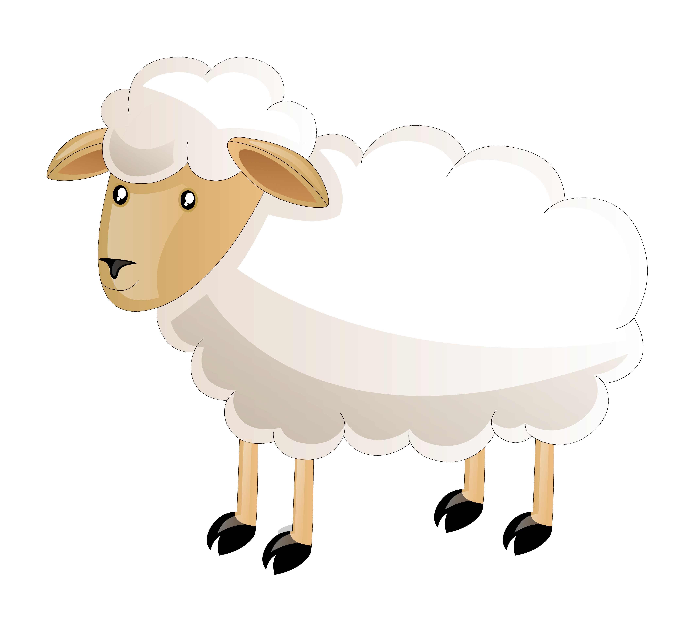

{% extends 'struktur.html' %}
<!--@generated-->

{% block body %}

<div class="container">
    <div class="row">


        <div class="col-md-3 border rounded-2">
            <h3>Rolle</h3>

            

            <ul class="list-group">
                <li class="list" style="list-style: none">Name:</li>
                <li class="list" style="list-style: none">Status:</li>
                <li class="list" style="list-style: none">Leben:</li>

            

        </div>
            
        {% for name,rolle,status in nurListen %}
            
        {% endfor %}
                


        
    </div>
</div>


{% endblock %}